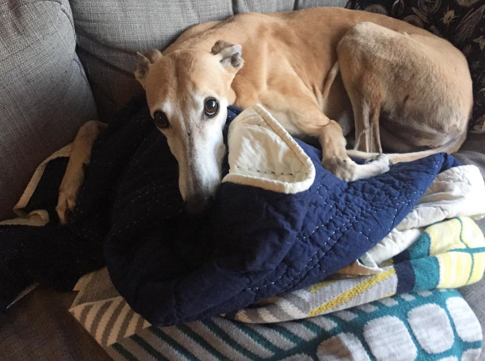

hi, I'm christa hartsock.
I'm currently a software engineering lead on Clear My Record at Code for America, helping states develop and implement more expansive record relief.I also help publish Logic Magazine.
I exist a few other places:
- my (infrequent) email newsletter
- mastodon
- github
- goodreads
- email: christa (dot) hartsock (at) gmail (dot) com
- offline, mostly in san francisco
if you'd like to talk for any reason, just shoot me a message via email! I'm often slow at responding, but do have the best intentions. short, direct asks usually get a response more quickly.
thank you for visiting; here is a gift:
